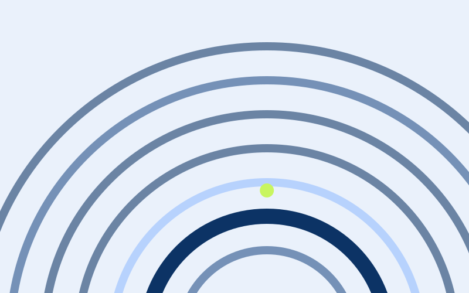

A considered place to learn / Cohort programmes
Learn the craft.Make it yours.
A small room. A generous critique. A piece of work that is unmistakably yours. Six-week programmes for people who care about their craft.
A clear syllabus. A finished project. A fresh perspective.
Cohort, not course
A fixed start, a fixed room and a deadline that other people also have.
Named faculty
Everyone who teaches here still practises, and you will meet them by name.
Work you can show
Every cohort ends with a piece of work, critiqued, revised and documented.
The teaching practice
Good work comes
from a good process.
A considered syllabus, a small room and generous critique. Three parts of a learning experience designed around your work.
Explore a focused lesson, with visual examples and a specific learning goal.
Apply the method to a small project. Keep your working files, not just your notes.
Use a considered rubric to review your work, then make a stronger second draft.
The proof is in the practice
Not just a new skill.
Something to show for it.
A few examples of the work our lessons are designed to help you make. Illustrative student projects, not stock promises.
The programme
Everything a working professional needs to learn properly
Six tracks. Each one is a sequence of cohorts rather than a catalogue of videos.

A studio, not a platform
Twelve to eighteen people per cohort. The room is small on purpose: it is the only way critique works.
What a week looks like
- — 90-minute live session, recorded
- — One exercise, due Thursday
- — Written critique from two peers
- — Office hours on Friday
Six weeks, one artefact
You leave with something finished, documented and defensible in a job interview.

Critique, in the open
Every cohort has a rubric from day one. You always know what “good” means before you are asked to hit it.
A shared rubric. Specific feedback. A stronger second draft.
“I could finally explain my decisions.”
— Ines R., designer, Lisbon. Cohort 04.
Taught by people who still ship
8 practising educators. All of them working. Most of them hiring.
Meet the faculty16
focused courses
8
practising educators
6
learning tracks
12
practical resources
The syllabus
Six weeks, in order
The same structure runs through every cohort, whatever the subject.
| Week | Theme | Deliverable |
|---|---|---|
| 01 | Foundations and vocabulary | A first attempt, shared in the room |
| 02 | Working method | A process document |
| 03 | Craft detail | One piece, revisited |
| 04 | Constraints and critique | A revision with a written rationale |
| 05 | Presentation | A five-minute walkthrough |
| 06 | Portfolio and next steps | The final artefact |
Faculty
Who you will actually meet


Library
Reading, before you commit
“I came for the syllabus and stayed for the room. Being asked to show unfinished work to twelve people is the fastest I have ever improved.”
Ines R. — Designer, Lisbon
For teams
We run this inside companies too.
Private cohorts, procurement-ready documentation, and a named faculty lead for the quarter.
Talk to our teamApplications for the February cohort close on 12 January.
Fourteen seats. A short written application, no interview.